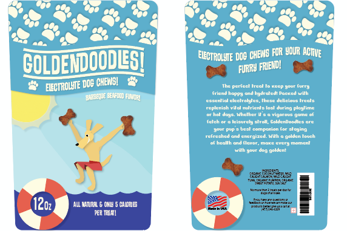
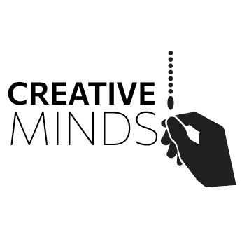

Jonathan Howitt
Graphic Designer, Photographer, UX Designer, Music Producer
Hello, my name is Jonathan Howitt, and I am a Graphic Designer, Photographer, UX Designer, and Music Producer from Raleigh, NC.
Featured Projects
View selected projects below. More information can be found at Howittdesign.com.
GoldenDoodles Packaging
I was the sole designer for this packaging project. I was hired by the pet product distribution company Bark Box to make summer themed packaging for their new product "GoldenDoodles".
View project / case studyCreative Minds Logo Design
I was the sole designer for this logo project. It is part of a larger project in the works where I will be designing the entire visual aesthetic for the Creative Minds Graphic Design Conference.
View project / case studyDriving High PSA Poster

I was the sole designer for this poster project. I was hired by the local police force to create a PSA style poster that can be put up around town to prevent the youth of the town from driving under the influence of cannabis
View project / case studyWork Experience
Drummer
KILLING THE VOID
August 23, 2023
I am the drummer for the local band KILLING THE VOID, I spend a lot of time practicing for upcoming gigs and helping in the writing process for new original songs.
Education
Wake Technical Community College - Raleigh, NC
Graphic and UX Design Program - 2023/2025
I attended Wake Tech for their Graphic Design program and plan to graduate in the summer of 2025.